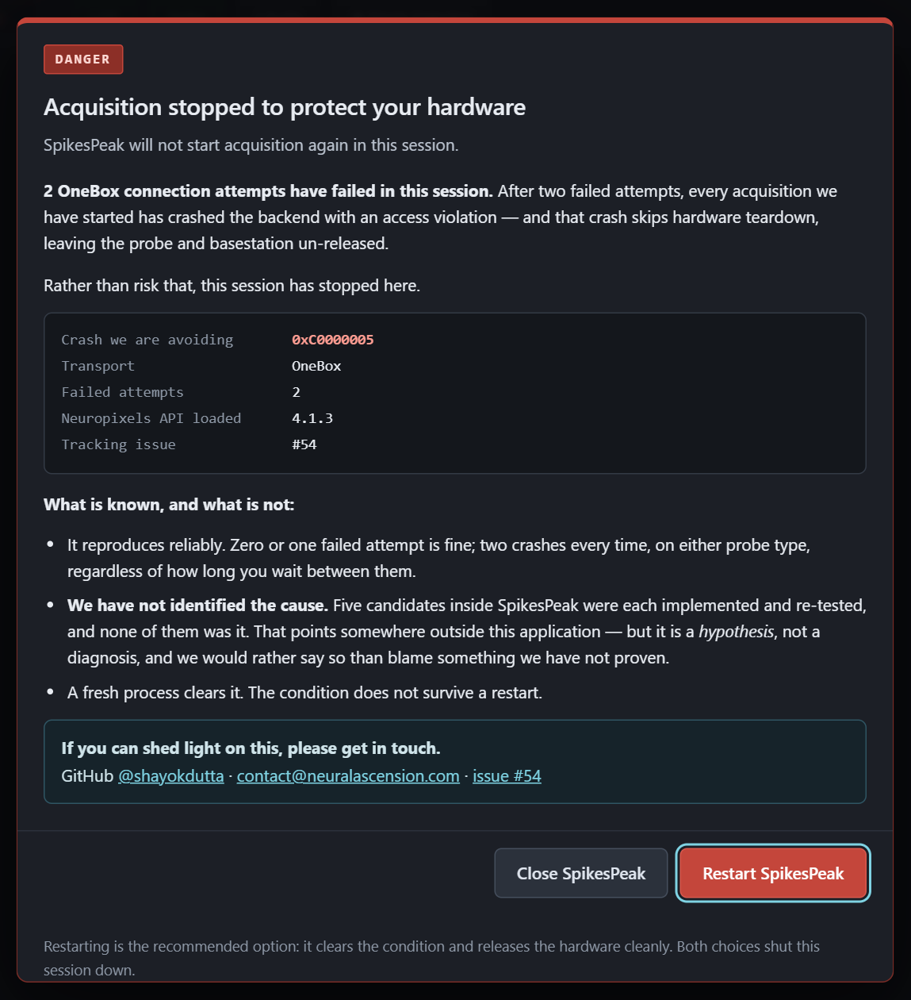

The hardware fault guard — stopping before issue #54#
Two failed Neuropixels connects on one transport, and the next acquisition dies with an access violation. SpikesPeak now counts those attempts and stops the session before that happens, with a dialog whose only ways out are restart or close.

1. What we are guarding against#
On a Windows rig with a PXIe chassis, this sequence kills the backend every time:
selectSource "NPX 1.0 (OneBox)" # fails, correctly -- no OneBox attached
selectSource "NPX 2.0 Multishank (OneBox)" # fails, correctly
selectSource "NPX 2.0 Multishank" # reports CONNECTED
setPlaying true # -> 0 frames, process gone (0xC0000005)
The log's last line is the main thread's acquisition confirmed: true. The worker dies on its first
read. There is no teardown, so the probe and basestation are left un-released — which on this
equipment is the one outcome the safety rules exist to prevent.
Established, with controls#
| failed attempts first | PXIe result |
|---|---|
| none | streams |
| 1 (either probe type) | streams |
| 2 (mixed, identical, or 20 s apart) | 0xC0000005 |
It is the count, not the probe type and not the timing.
What we do NOT know#
Five candidate causes inside SpikesPeak were each implemented and re-tested, and none was it: the PXI
np_closeBS, the OneBox teardown at an unopened slot, the per-attempt np_checkFtdiDriver, the
whole releaseForeignBasestations body, and timing. After all of them a failed attempt reduces to
np_scanBS + np_getDeviceList and still poisons the next acquisition.
That points somewhere outside this application — but it is a hypothesis, not a diagnosis. The dialog says so in those words. We have not proven where the fault lives, and it should not be repeated as though we had. If you can shed light on it: GitHub @shayokdutta, contact@neuralascension.com, or issue #54.
2. The counting rule#
src/core/ConnectAttemptLog.{hpp,cpp} — a process-wide tally of failed connects per transport.
getConnectAttemptLog().noteFailure(
ConnectAttemptLog::fromSourceModuleName(sourceName)); // in SourceManager::setupSources
Three decisions, each with a test that pins it (tests/test_connectattemptlog.cpp):
The threshold is two, not one. One failed connect is ordinary — the box is off, the wrong profile was picked. Tripping at one would put a blocking modal in front of the operator during normal fumbling and teach them to click past it. Two is where the crash reproduces.
A success never resets the count. It is unknown whether a good connect undoes whatever state causes this, and the cost of guessing wrong is a process death with no hardware teardown. The tally is monotonic for the life of the process; the way to clear it is a new process, which is exactly what the operator is offered.
Only real hardware counts. fromSourceModuleName is an exact match against
source.npx.onebox and source.npx.pxi. A substring test on "onebox" was the obvious version and
is wrong: a simulated source named with "onebox" in it — a natural thing for someone to add — would
be counted, and the guard would fire on a rig with no hardware attached at all. Every sim source
(simdata, sim2, simadc, synthripples) and both NI-DAQ sources open no basestation, so their
failures say nothing about the driver state.
3. What the operator sees#
When the threshold trips, the backend broadcasts hardwareFault and logs it:
{"event":"hardwareFault","kind":"connect-attempts","transport":"OneBox",
"failures":2,"threshold":2,"code":"0xC0000005","driver":"4.1.3","issue":54}
driver is the Neuropixels API actually loaded, captured by Npx::recordDriverVersion() on the
first hardware open. The vendored import library says 4.1.3, but the DLL that resolves at run time is
a property of the machine — a bug report that names a version has to name the one that ran.
webinterface/HardwareFaultModal.js renders it. The dialog does not close: no X, no Escape (the
key is swallowed in the capture phase), no backdrop click, and both buttons end the session. That is
the point — the alternative to this dialog is the access violation, and a dismissable warning would
let someone click straight into it.
| button | what happens |
|---|---|
| Restart SpikesPeak | relaunches, then exits — recommended, because a fresh process clears the condition |
| Close SpikesPeak | graceful quit: teardown, hardware released, process exits |
4. How restart actually works#
command: "restart" in WebSocketServer. It writes a small relauncher script to the temp directory
and runs that, rather than passing a compound command to cmd /c.
That is not fussiness. The obvious version —
QProcess::startDetached("cmd", {"/c", "timeout /t 4 & \"" + exe + "\" " + args});
— looks right and does nothing. QProcess quotes the whole argument, so cmd receives nested
quotes around a path containing spaces and gives up silently; startDetached still returns true,
so there is not even an error to notice. This was written, shipped into a test, and observed doing
exactly that. The script file has one unquoted path argument and cannot hit it.
The delay uses ping -n 5 127.0.0.1, not timeout: timeout requires a console, and a detached
process has none. The delay exists because the dying process still holds ports 1234 and 8234 — a
replacement launched immediately would fail to bind them and die silently, leaving the operator with
nothing at all.
Verified end to end on the rig: two failed OneBox connects raise the dialog, Restart brings a fresh backend up ~4 s later, and that backend connects PXIe and streams 1454 frames in 10 s with the tally clear.
5. A second bug this work uncovered#
Testing the guard produced FATAL QThread: Destroyed while thread is still running during a
disconnect. Unrelated to #54, and worse in one way: it killed the process during teardown,
without releasing the hardware.
AudioProcessor started its worker thread and nothing ever quit or joined it. The QThread is a
child QObject of the processor, so ~QThread ran as part of destroying the processor while the
thread was still going, which Qt turns into a fatal abort. It had been unreachable because the only
profiles declaring proc.audio were the NI-DAQ PXIe ones, which could not start at all
(issue #55) — adding proc.audio to working profiles exposed it.
The destructor now quits and joins the worker (bounded, then terminate()), before
Pa_Terminate() — the worker calls into PortAudio, so tearing the library down first would pull the
floor out from under a live callback. Verified with five connect/play/disconnect cycles: zero FATALs.
6. Testing it yourself#
The guard needs no OneBox — it fires on failed connects, and a OneBox profile with no box attached fails exactly as required:
Disconnect # a select while connected is refused outright
selectSource "NPX 2.0 Multishank (OneBox)" # fails -- 1 of 2
selectSource "NPX 1.0 (OneBox)" # fails -- 2 of 2 -> dialog
The backend logs each step:
[ConnectAttemptLog] "OneBox" connect FAILED -- 1 of 2 before the driver is considered unsafe (issue #54).
[ConnectAttemptLog] "OneBox" connect FAILED -- 2 of 2 before the driver is considered unsafe (issue #54).
[WebSocketServer] ISSUE #54 GUARD TRIPPED -- "OneBox" has failed to connect 2 times.
tests/test_connectattemptlog.cpp covers the rule itself and was proven able to fail: restoring the
substring match makes aSimulatedSourceNamedLikeHardwareIsStillNotHardware go red.
7. Known limits#
- The guard is a stop, not a fix. The underlying fault is untouched and #54 stays worth solving.
- It cannot help a process that has already crashed. It prevents reaching the crash; it does nothing if something else gets there first.
- The threshold assumes the reproduction generalises. Two failures is where this rig crashes, on this driver. A machine that crashes at one would not be caught.
- Restart is best-effort. If the relauncher script cannot be written or spawned, the dialog says so and the session still closes cleanly rather than pretending.